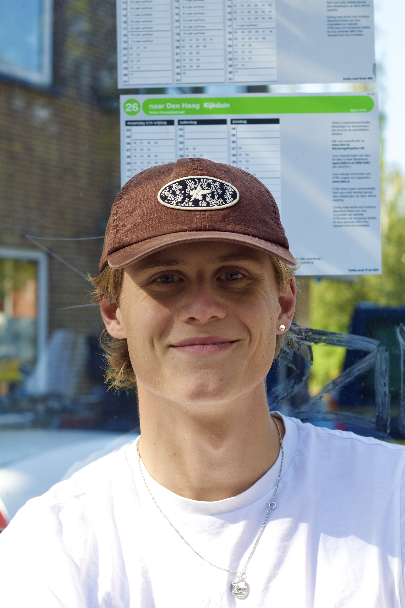

Daan Meinardi
A website about me and my progress.
About Me
Im Daan and this website is here to show people what I like to do and where my skills are. Im 22 years old and study Creative Technology at the Vrije Universiteit in Amsterdam.
Before starting this study I was travelling trough europe in summers and teaching skiing and snowboarding in winters. Altough I feel like I could have done this my whole life,
I also know I have more in me and want to make a difference in the world. I am addicted to boardsports like surfing and snowboarding and try to do so as much as possible in my freetime.
Combining a busy study and a lot of other cool things can be challenging at times, but when you just give it your all it will work out good in the end.
Now if you want to check out what I have made so far you can check out my portfolio. Thanks!